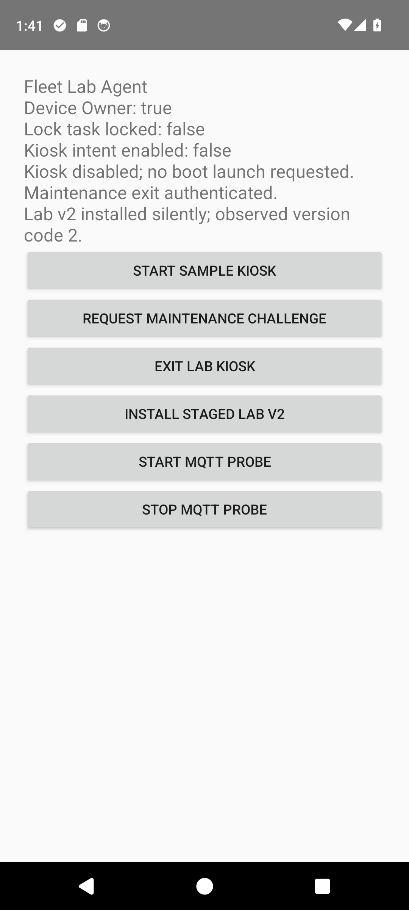
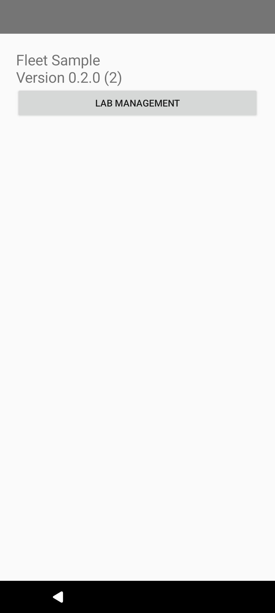
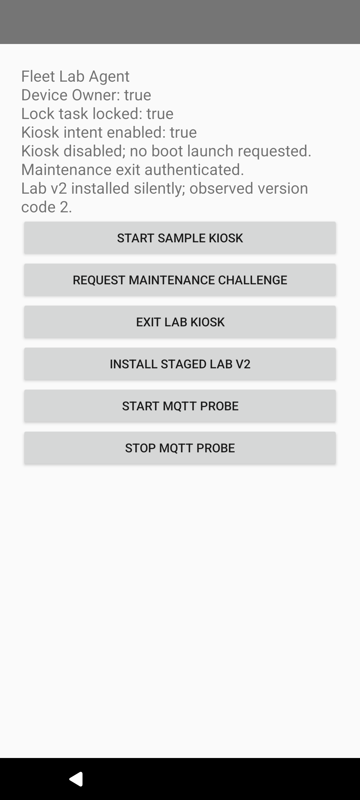
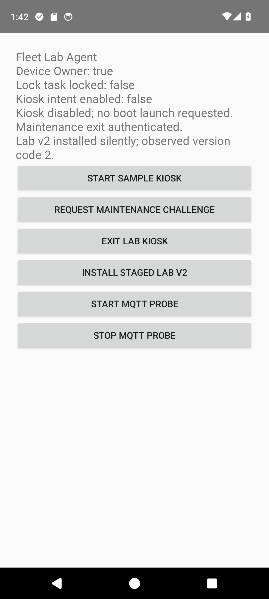

Fleet Android test replay
2026-10-16T10:41:19.391299+00:00 | emulator-5554 | passed
New recorded rerun of the lab checks. Assertions and command transcript
mqtt-lifecycle.mp4

mqtt-tls-round-trip | activity | policy | UI mqtt-received-while-sample-foreground | activity | policy | UI
mqtt-received-while-sample-foreground | activity | policy | UI
broker-offline-sample-still-locked | activity | policy | UI broker-reconnected-new-probe-acknowledged | activity | policy | UI
broker-reconnected-new-probe-acknowledged | activity | policy | UI process-death-sample-contained-no-immortal-socket | activity | policy | UI
process-death-sample-contained-no-immortal-socket | activity | policy | UI
explicit-probe-restart-after-process-death | activity | policy | UI
mqtt-stopped-explicitly | activity | policy | UI